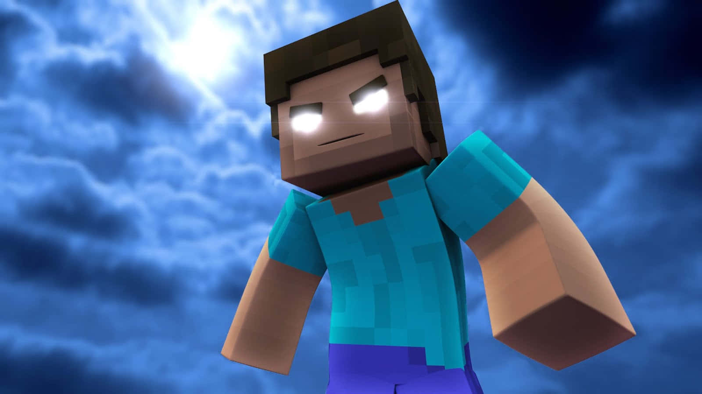

CREEPYPASTAS
HEROBRINE
Herobrine é uma lenda urbana e creepypasta do vídeo-jogo Minecraft. Ele é frequentemente representado como uma versão da personagem de Minecraft Steve, mas com olhos brancos em que faltam as pupilas, e cujo comportamento primariamente envolve destruir o mundo do jogadores. A história originou de uma publicação anónima no /v/ do 4chan em 2010, onde o autor relatou ter encontrado uma figura estranha num mundo de single-player, seguido de as suas mensagens serem apagadas quando tentava falar com outros jogadores sobre o que viu. A história ficou ainda mais popular depois dos livestreamers Copeland e Patimuss criarem as suas próprias versões. Herobrine tornou-se uma parte popular da cultura online envolvendo o Minecraft, como também efetivamente um meme. Interesse na personagem inspirou muitos outros a criar as suas próprias histórias e alegados avistamentos centrados à volta de Herobrine, como também criar mods de Minecraft que o adicionam ao jogo. Interesse na personagem continuou até ao presente, levando à redescoberta de mídia posteriormente perdida relacionada aos avistamentos originais. Herobrine tem sido considerado uma das lendas mais notáveis em vídeo-jogos, com a sua popularidade levando-o a classificar-se numa votação do Guinness World Records de melhores vilões de vídeo-jogos apesar de nunca realmente existir dentro do Minecraft. A personagem foi referida várias vezes pelos desenvolvedores de Minecraft.

ENTITY 303
A Entidade 303 (também é conhecido como "303") é uma creepypasta comumente chamada de "o Novo Herobrine". De acordo com a pasta, um ex-funcionário da Mojang foi demitido por Notch (o criador do Minecraft). Agora ele quer vingança contra a Mojang e os jogadores de Minecraft. Dizem que a Entidade 303 não é apenas o ex-funcionário, mas uma equipe inteira de hackers com nomes de usuário como "303mojang.com303" e "entity.303". Se você tiver algum arquivo em seu computador que tenha qualquer nome com "303", então pode ser os hackers do 303. O 303 também pode invadir os mundos dos jogadores e corrompê-los

ALEX GIGANTE
Uma criatura de 12 blocos de altura com uma skin de Alex ensanguentada. Durante todo o jogo, a criatura simplesmente observará você da névoa, raramente fazendo outras ações inexploradas. Quando ela se move, ela deixa pegadas na forma de buracos de blocos 3x2x2. Não é recomendado chegar muito perto de Alex, em muitos casos isso fará com que o jogo trave...
Para encontrar o Alex Gigante, você precisa selecionar a versão OptiFine 1.12.2, definir a dificuldade peaceful, 6 chunks render e 0.2 fog distance. Não esqueça de inserir a seed 7778749381209293789578 ao criar o mundo. Então, quando você aparecer no mundo, nade até o continente, porque essa criatura vive nele.
Ele aparece em todos os biomas, mas mais frequentemente em pântanos, florestas e montanhas nevadas. Você pode não notar na primeira vez, porque a princípio ele sempre estará em algum lugar no ângulo de visão.
.jpg)